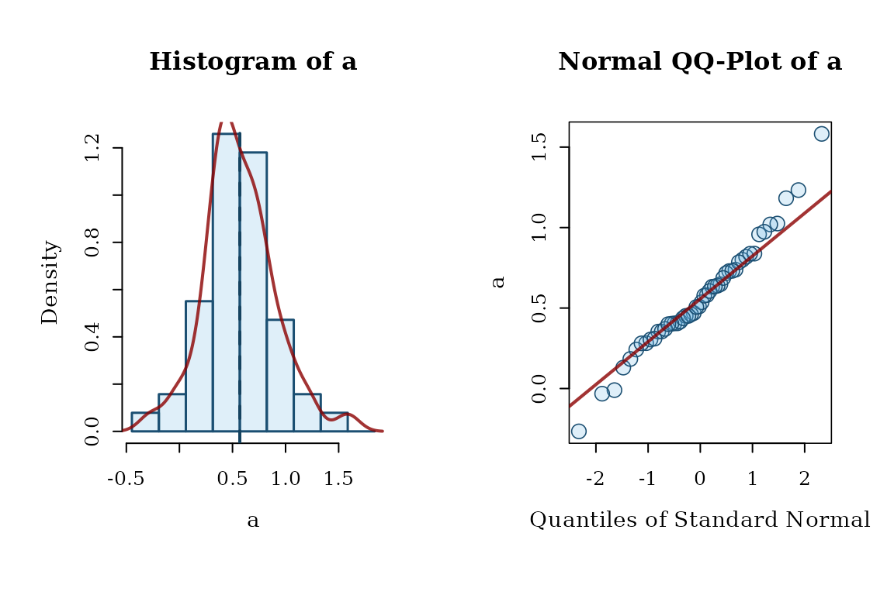
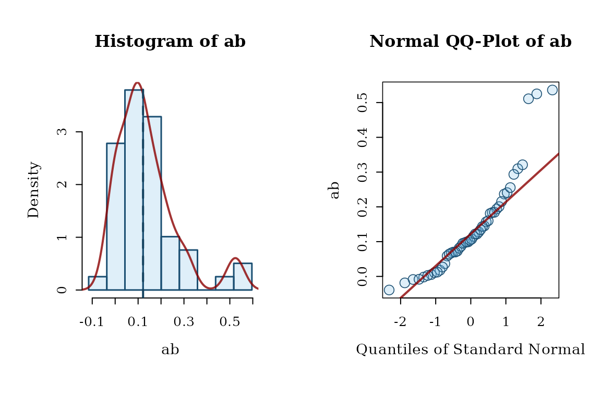
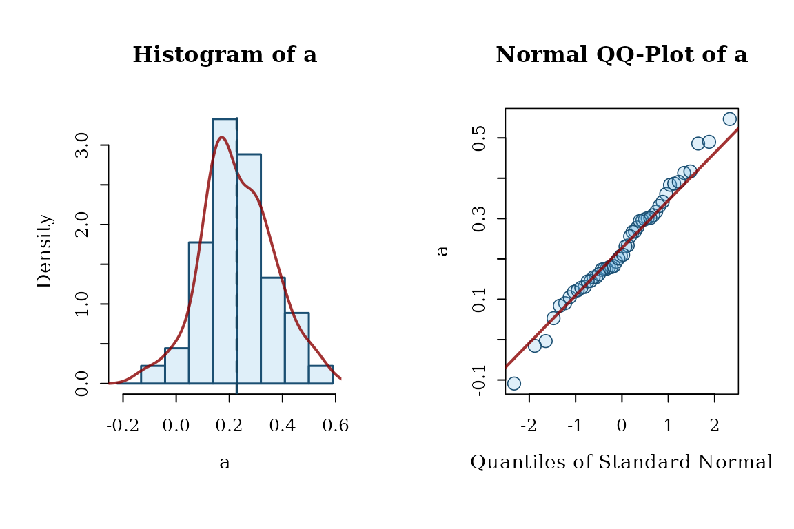
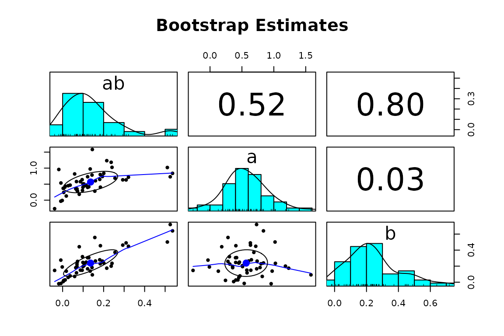
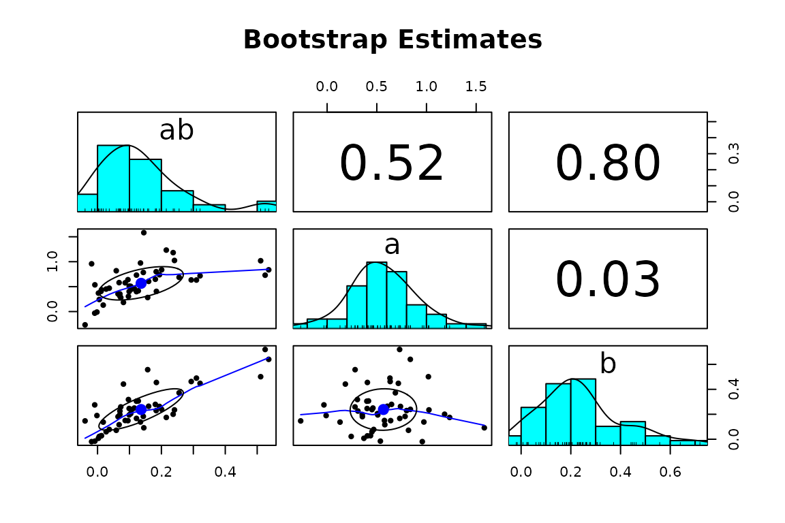

Plots for examining the
distribution of bootstrap estimates
in a model fitted by lavaan.
Usage
hist_qq_boot(
object,
param,
standardized = NULL,
nclass = NULL,
hist_color = "#5DADE233",
hist_linewidth = 1.5,
hist_border_color = "#1B4F72",
density_line_type = "solid",
density_line_color = "#8B0000CC",
density_line_linewidth = 2,
est_line_color = "#154360",
est_line_type = "dashed",
est_line_linewidth = 2,
qq_dot_pch = 21,
qq_dot_color = "#1B4F72",
qq_dot_fill = "#5DADE233",
qq_dot_size = 1.3,
qq_line_color = "#8B0000CC",
qq_line_linewidth = 2.1,
qq_line_linetype = "solid"
)
scatter_boot(
object,
params,
standardized = NULL,
main = "Bootstrap Estimates",
...
)Arguments
- object
Either a
lavaan-classobject with bootstrap estimates stored, or the output ofstandardizedSolution_boot(). For standardized solution and user-defined parameters, if the object is a `lavaan-class“ object, the estimates need to be stored bystore_boot().- param
String. The name of the parameter to be plotted, which should be the name as appeared in a call to
coef().- standardized
Logical. Whether the estimates from the standardized solution are to be plotted. Default is
NULL. Ifobjectis alavaanobject, then this is a required parameter and users need to explicitly set it toTRUEorFALSE. Ifobjectis the output ofstandardizedSolution_boot(), then this argument is ignored ( forced to beTRUEinternally).- nclass
The number of breaks. This argument will be passed to
hist(). Default isNULL.- hist_color
String. The color of the bars in the histogram. It will be passed to
hist()for the argumentcol. Default is light blue (scales::alpha("#5DADE2", 0.2)).- hist_linewidth
The width of the borders of the bars in the histogram. Default is 1.5.
- hist_border_color
String. The color of the borders (outline) of the bars in the histogram. It will be passed to
hist()for the argumentborder. Default is a dark blue color ("#1B4F72").- density_line_type
String. The type of the line of the density curve in the histogram. It will be passed to
lines()for the argumentlty. Default is"solid".- density_line_color
String. The color of the density curve in the histogram. It will be passed to
lines()for the argumentcol. Default is"blue".- density_line_linewidth
The width of the density curve in the histogram. It will be passed to
lines()for the argumentlwd. Default is 2.- est_line_color
String. The color of the vertical line showing the point estimate in the histogram. It will be passed to
abline()for the argumentcol.- est_line_type
String. The type of the vertical line in the histogram showing the point estimate of the parameter. It will be passed to
abline()for the argumentlty. Default is"dashed",- est_line_linewidth
The width of the vertical line showing the point estimate in the histogram. It will be passed to
hist()for the argumentlwd. Default is 2.- qq_dot_pch
Numeric. The shape of the points in the normal QQ-plot. It will be passed to
qqnorm()for the argumentpch. Default is 21.- qq_dot_color
String. The color of the points in the normal QQ-plot. It will be passed to
qqnorm()for the argumentcol.- qq_dot_fill
String. The fill color of the points in the normal QQ-plot. Only applicable when
qq_dot_pchis set to a symbol that allows fill color (e.g.,pch = 21). It will be passed toqqnorm()for the argumentbg. Default is a semi-transparent light blue (scales::alpha("#5DADE2", 0.2)).- qq_dot_size
The size of the points in the normal QQ-plot. It will be passed to
qqnorm()for the argumentcex. Default is 2.- qq_line_color
String. The color of the diagonal line to be drawn in the normal QQ-plot. It will be passed to
qqline()for the argumentcol.- qq_line_linewidth
The width of the diagonal line to be drawn in the normal QQ-plot. It will be passed to
qqline()for the argumentlwd. Default is 2.1.- qq_line_linetype
The type of the diagonal line to be drawn in the normal QQ-plot. Default is
"solid".- params
The vector of the names of the parameters to be plotted, which should be the names as appeared in a call to
coef(). The functionscatter_boot()requires two or more parameters selected by this argument.- main
The title of the scatterplot matrix. Default is
"Bootstrap Estimates".- ...
Arguments to be passed to
psych::pairs.panels(). Please refer to the help page ofpsych::pairs.panels()for arguments to customize the plot.
Value
Return the original lavaan::lavaan object invisibly. Called for its side-effect (plotting the graphs).
Details
Rousselet, Pernet, and Wilcox (2021)
argued that when using bootstrapping,
it is necessary to examine the distribution
of bootstrap estimates. This can be
done when boot::boot() is used
because it has a plot method for
its output. This cannot be easily
done in model fitted by lavaan::lavaan(),
such as lavaan::sem() and
lavaan::cfa().
The function hist_qq_boot() is used for
plotting the distribution of bootstrap
estimates for a model fitted by
lavaan in a format similar to that
of the output of boot::boot(), with
a histogram on the left and a normal
QQ-plot on the right.
For free parameters in a model
(unstandardized), it can be called
directly on the output of lavaan
and retrieves the stored estimates.
For estimates of user-defined parameters,
call store_boot() first to compute
and store the bootstrap estimates
first.
For estimates in standardized solution,
for both free and user-defined
parameters, call store_boot()
first to compute and store the bootstrap
estimates in the standardized solution.
It can also
plot bootstrap estimates in the output
of standardizedSolution_boot()
or parameterEstimates_boot().
The function scatter_boot() is
used to generate a scatterplot
matrix of the bootstrap estimates of
two or more parameters. The function
psych::pairs.panels() from the
package psych is used.
Like hist_qq_boot(), it can also
be used on the output
of standardizedSolution_boot()
or parameterEstimates_boot().
References
Rousselet, G. A., Pernet, C. R., & Wilcox, R. R. (2021). The percentile bootstrap: A primer with step-by-step instructions in R. Advances in Methods and Practices in Psychological Science, 4(1), 1–10. doi:10.1177/2515245920911881
Author
Shu Fai Cheung https://orcid.org/0000-0002-9871-9448
Examples
library(lavaan)
#> This is lavaan 0.6-20
#> lavaan is FREE software! Please report any bugs.
set.seed(5478374)
n <- 50
x <- runif(n) - .5
m <- .40 * x + rnorm(n, 0, sqrt(1 - .40))
y <- .30 * m + rnorm(n, 0, sqrt(1 - .30))
dat <- data.frame(x = x, y = y, m = m)
mod <-
"
m ~ a * x
y ~ b * m + x
ab := a * b
"
fit <- sem(mod,
data = dat,
se = "bootstrap",
bootstrap = 50,
iseed = 985714)
# Can plot bootstrap estimates for
# free parameters directly
# Note that 'standardized' must be always be set to
# either TRUE or FALSE. No default value.
hist_qq_boot(fit, "a", standardized = FALSE)

# For estimates of user-defined parameters,
# call store_boot() first.
fit <- store_boot(fit)
hist_qq_boot(fit, "ab", standardized = FALSE)

# For estimates in standardized solution,
# call store_boot() first.
fit <- store_boot(fit)
hist_qq_boot(fit, "a", standardized = TRUE)

hist_qq_boot(fit, "ab", standardized = TRUE)
# It can also plot the estimates stored
# in the output of standardizedSolution_boot().
std_boot <- standardizedSolution_boot(fit)
#> Warning: The number of bootstrap samples (50) is less than 'boot_pvalue_min_size' (1000). Bootstrap p-values are not computed.
hist_qq_boot(std_boot, "ab")
 hist_qq_boot(fit, "ab", standardized = TRUE)
hist_qq_boot(fit, "ab", standardized = TRUE)
 # Scatterplot matrix of bootstrap estimates for
# two or more free parameters
scatter_boot(fit, c("a", "b", "ab"), standardized = FALSE)
# Can include user-defined parameters in
# scatterplot matrix, if their bootstrap
# estimates have been stored
scatter_boot(fit, c("ab", "a", "b"), standardized = FALSE)

# scatter_boot also supports the
# standardized solution
scatter_boot(fit, c("a", "b", "ab"), standardized = TRUE)
# Scatterplot matrix of bootstrap estimates for
# two or more free parameters
scatter_boot(fit, c("a", "b", "ab"), standardized = FALSE)
# Can include user-defined parameters in
# scatterplot matrix, if their bootstrap
# estimates have been stored
scatter_boot(fit, c("ab", "a", "b"), standardized = FALSE)

# scatter_boot also supports the
# standardized solution
scatter_boot(fit, c("a", "b", "ab"), standardized = TRUE)